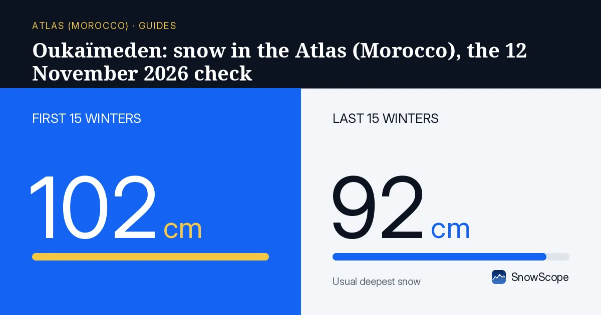
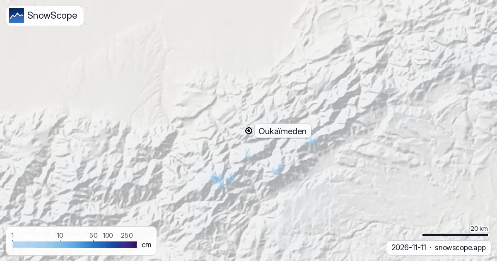

Oukaïmeden: snow in the Atlas (Morocco), the 12 November 2026 check
November is arriving dry in the High Atlas. SnowScope shows 0 cm at all three heights of Oukaïmeden (base 2600 m, mid-mountain 2929 m, top 3258 m) on 12 November, with no fresh snow in the past week and none forecast for the next seven days. This is running late—normally the first snow settles here around 5 November—but a slow autumn start does not predict the winter ahead.
See the live snow forecast for Oukaïmeden in the SnowScope appSnow depth, powder alerts and the 3D map, free.

Three heights, all bare
The snow map shows grey across the Ourika valley and up to the high ridges: 0 cm measured at the base, mid-mountain and top. The past 48 hours brought nothing, nor did the last week. The forecast for the next seven days holds no snow either.
Zero at every height leaves little room for doubt. The slopes of Toubkal and its neighbours stand exposed rock and scree for now.
November is usually thin anyway
Across the 46 past winters (1980–81 to 2025–26), first snow typically reaches Oukaïmeden around 5 November. Even in a typical November, depth is slight: the middle value is 2 cm at the base, 3 cm at mid-mountain and 3 cm at the top. A snowy November can deliver 30 to 38 cm at the base or 38 cm at the top, but that is rare.
December marks the real shift: 16 cm builds at the base, 18 cm at mid-mountain and 20 cm at the top in a usual winter.
When the snow season peaks
March is the deepest month at every height. In a middle winter, the base holds 46 cm, mid-mountain sits at 53 cm and the top reaches 58 cm. The median peak across all 46 winters runs 78 cm at the base, 92 cm at mid-mountain and 112 cm at the top. The leanest winter stopped at 49 cm at the top; the richest reached 248 cm.
Last winter (2025–26) was generous: 149 snow days and deep cover throughout. The most reliable week for reaching 50 cm or more at the top is week 9 (late February/early March), when 61 per cent of past winters delivered it.
What height offers the best odds
The top at 3258 m has the strongest statistical case for reliable snow. Across past winters, the top receives good snow (50 cm or more) in half the season or better during six weeks; mid-mountain has reliable cover in four weeks; the base is reliable in just one week. Height matters here.
The difference stacks up over a winter. The top averages 112 cm peak depth; mid-mountain 92 cm; the base 78 cm. That gap widens in lean years and narrows in generous ones, but the summit always holds the best snow.

Planning a trip to Oukaïmeden
A dry November is unremarkable in the Atlas. Snow arrives here in pulses—big storms rather than steady accumulation—so the shape of one week tells little about the month to come. If you aim to ski Oukaïmeden, target late January through March and check the snow map a week before travel.
The road from Marrakech can close during heavy snow: confirm conditions locally before you leave.
Tips for skiers
- Watch the top at 3258 m: it holds snow longest and deepest. When the base and mid-mountain are thin, the peak often remains skiable.
- Save the Oukaïmeden page and refresh it with each forecast run. Snow here comes in big episodes, so changes show quickly.
- Late February through March offers the best statistical chance of deep cover. If you can be flexible, that is when to book.
- The lift and resort opening depend on the resort operator, not on the snow depth shown on our map.
- Winter storms can drop 20–30 cm in a single event at this altitude. When snow arrives, it may close the road for a day or two.
About these numbers
Resort snow depths are the deepest snow on the resort's upper slopes on the date shown; they are estimates for an area, not a measurement at one point. Forecasts can change. Always read the official avalanche bulletin before going off-piste.
Cite this report
For research, teaching or the press: the numbers and charts are free to reuse under CC BY 4.0 with this citation.
SnowScope (2026), Oukaïmeden: snow in the Atlas (Morocco), the 12 November 2026 check, https://snowscope.app/blog/en/2026/11/oukaimeden-neige-atlas-maroc-12-novembre-2026.html, accessed 2026-11-12
SnowScope (Atlas Labs). (2026, November 12). Oukaïmeden: snow in the Atlas (Morocco), the 12 November 2026 check. SnowScope snow reports. https://snowscope.app/blog/en/2026/11/oukaimeden-neige-atlas-maroc-12-novembre-2026.html
BibTeX
@misc{snowscope2026oukaimedenneigeatlasmaro,
author = {{SnowScope (Atlas Labs)}},
title = {Oukaïmeden: snow in the Atlas (Morocco), the 12 November 2026 check},
year = {2026},
month = nov,
howpublished = {\url{https://snowscope.app/blog/en/2026/11/oukaimeden-neige-atlas-maroc-12-novembre-2026.html}},
note = {Published 2026-11-12 07:16 UTC; accessed 2026-11-12}
}· CC BY 4.0 · Methods, data and tools →
Oukaïmeden: snow and temperature by height, this winter vs last (tools) →
Follow Oukaïmeden
Free: a message when fresh snow is coming, and the forecast every morning.
More snow reports

Oukaïmeden is 50 km from Marrakech. December snow is thin and unpredictable: plan around storms, not the calendar. Data from 13 November 2026.

At Oukaïmeden ski resort in Morocco, a typical December 15 brings only 16 cm at mid-mountain. SnowScope shows odds from 46 winters of data.

December brings only 18 cm typical depth at mid-mountain in Oukaimeden, versus 53 cm in March. Early season is thin but possible. Data 13 November 2026.